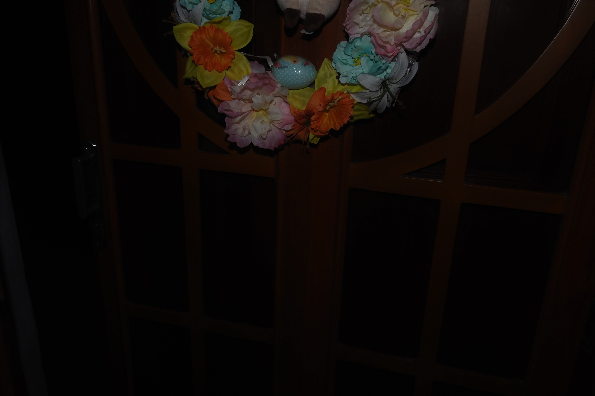
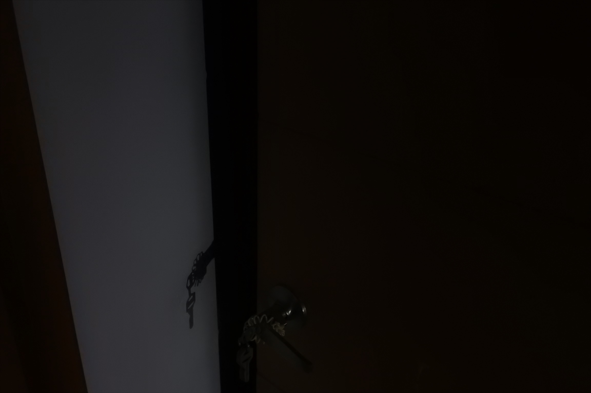
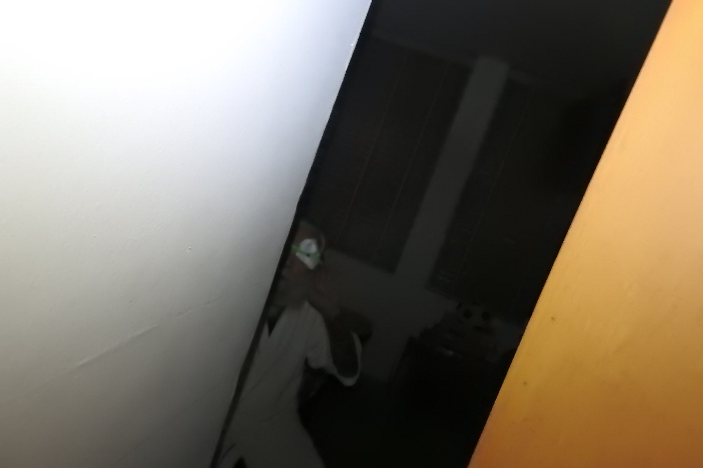
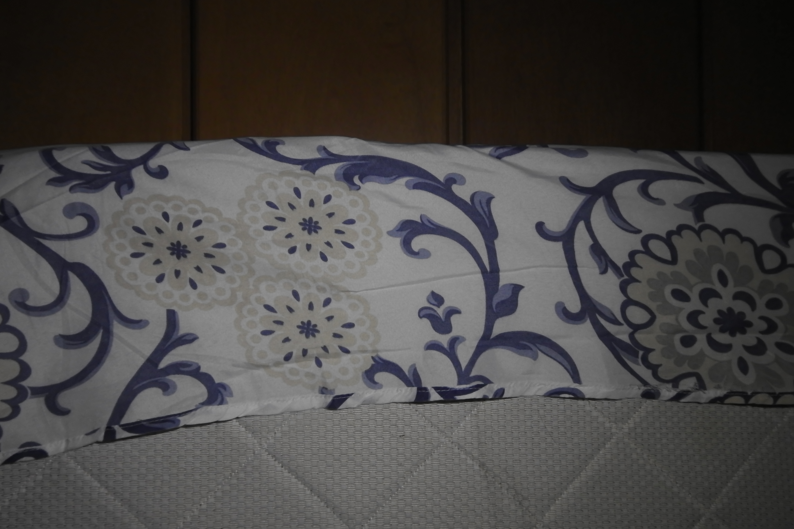
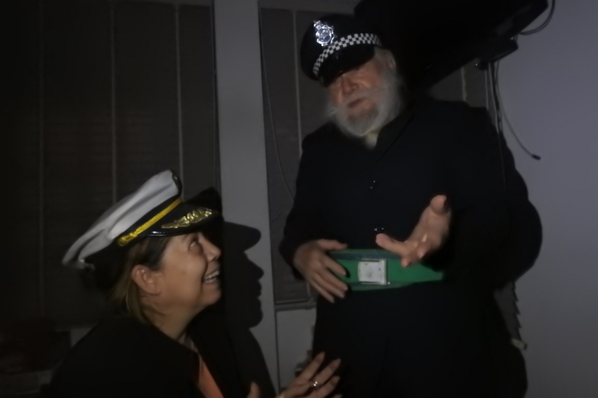
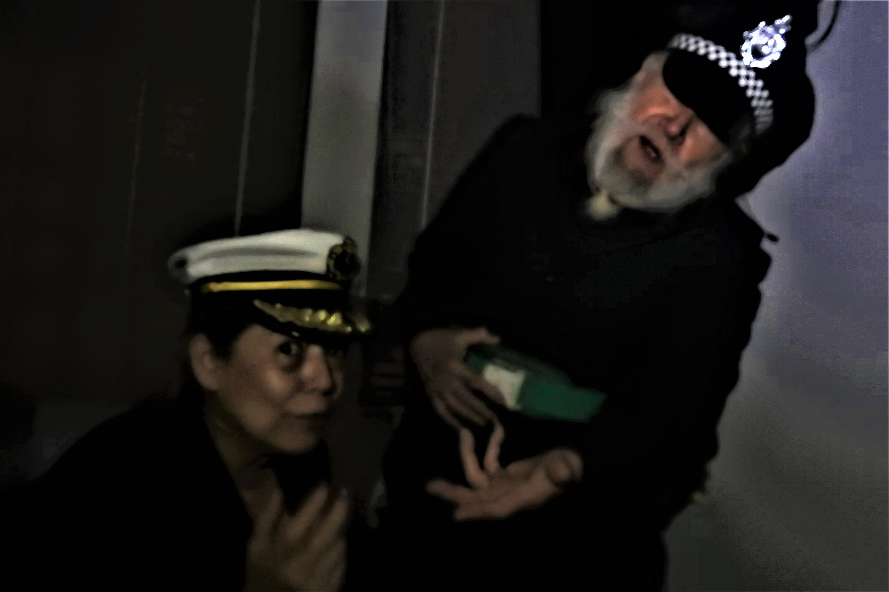
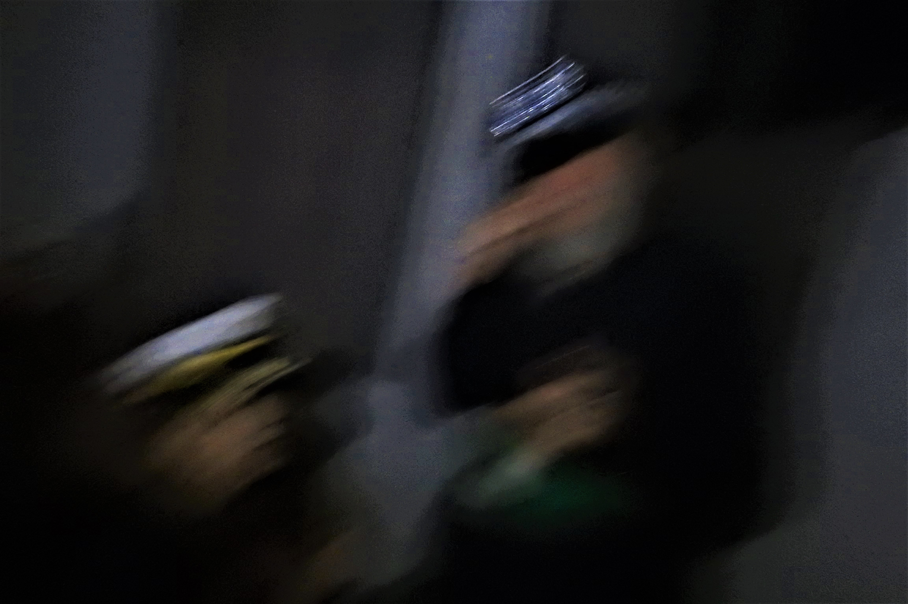

Introducción
Para finalizar el álbum fotográfico, decidí hacer algo radicalmente diferente: en vez de mirar a una época específica de la historia, decidí mirar una ubicación específica del mundo, y trabajar la literatura de allí. En este caso escogí a los EEUU: el texto que trabajé fue El corazón delator, de Edgar Allan Poe. Como es la semana final, decidí consolidar mis conocimientos fotográficos aprendidos durante estas 7 semanas en un solo proyecto: un ensayo fotográfico con base al texto.
El corazón delator
(Nota: se recomienda hacer la ventana más pequeña para visualizar las fotos)








